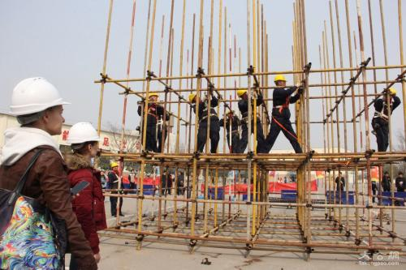

NEW2019.8.8
[STORY]に東京会館様との対談記事を公開しました。
つなぐ。 今あるものを まだない明日へ
資産や建物など、今、目の前にあるものの先に、まだ見ぬ未来があります。 だからこそ、一つひとつのプロジェクトと真摯に向き合い、マネジメントの 力で“今”と“明日”をつないでゆく。あらゆるプロジェクトをクリエイティブ にマネジメントすること。それが私たちの使命です。
OUR SERVICE
NCMは、“今あるもの”を“まだない明日”につなぐためのマネジメント・サービスを提供しています。 日建グループとしての豊富な経験や専門知識を活かすことで事業をとりまく課題を解決し、クライアントの利益はもちろん、社会や環境に貢献できる未来を実現します。
PROJCT
話題の商業施設やホテルから最先端のオフィスや集合住宅まで、日常の風景の一部となっている”あの場所”も、NCMが手がけたプロジェクトかもしれません。私たちが提供するサービスは、すべてオーダーメイド。個性豊かなプロジェクトの事例をご紹介します。
Learn more
「記憶の継承」と「変わらぬ」おもてなしを目指して
東京会館本館建替計画
Tokyo,JAPAN
東京會舘本舘建替計画～コンサルティング及び設計監理～「再開発共同事業における事業性検証・建設コンサルティングから
伝統と格式を継承し最新設備を備えた社交場設計まで」
STORY
NCMのプロジェクトの背景には、一つひとつの異なる想いや物語があります。プロジェクトに関わった人々によるクロストークやNCMメンバーのメッセージを通じて、プロジェクトの歩みやコンストラクション・マネジャーの仕事をご紹介します。
Learn more
公共施設で初の本格的なCM導入
町田市長に聞くCMの意義
日本生命 東館新築 CM 業務ユニット理念に基づく、設計と施工のインテグレーションによる革新的プロジェクト